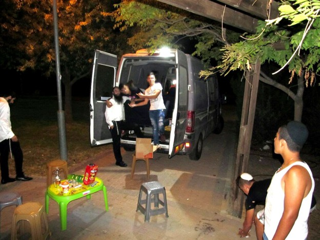

It Is Never Too Late for a Second Chance
Meet R ’ Yonasan Shpitzer, the man who has dedicated his life to giving young people a second chance, and in many cases a third or fourth. * He divides his time between the three hats that he wears, shliach of the Rebbe in Moshav Mata, ambulance driver, and director of an outreach project to reach kids on the street. * He spends his evenings circulating with his staff on a minibus, searching for those kids that most people prefer to pretend do not exist. * With hard and painstaking work, with his winning smile, and with a whole lot of patience and acceptance, he manages to break through the walls of silence and loneliness of the kids on the street, getting through to them and accomplishing amazing results. * R ’ Shpitzer offers us a rare glimpse into the complex world of dealing with the youth who are dropping out, as well as advice for parents on how to avoid having to deal with such situations in the first place .
By Zalman Tzorfati

Kobi’s eyes are red, whether it is from lack of sleep, from too much time spent watching a flickering screen, from the use of substances that cause redness of the eyes, from extended crying, or maybe from all the above.
Things are not going well for Kobi. He often finds himself waxing painfully nostalgic over the Yanky he once was. This usually hits him when he is feeling alone, when he does not have to put on the face of a proud rebel. That is when it bursts forth from within, a tremendous silent cry of WHY??? A cry that if he gave it voice would echo from the mountains of Judea to the streets of Yerushalayim.
However, the cry remains silent and it is not to be heard. And Kobi continues to pine for the Yanky that was, the Yanky from before things spiraled out of hand. The Yanky who scored top grades, who was the pride of the family and who every year was on stage during the end of the school year ceremonies, the Yanky he was before he turned into Kobi.
Now he sits alone. The guys are surely looking for him, or maybe not. Is anybody out there looking for him? And if he disappeared one day for good, would anybody even notice? He can only wonder. Back home, the feeling is that they gave up on him a long time ago. And his buddies? The street that adopted him with such warmth and acceptance, and made him feel more secure than he did at home, is it a true friend? Will it stand up for a person when he is in difficult straits? Or maybe it is only there to help push a person out and that’s it.
Midnight. He purposely chose to spend the evening not hanging out with the guys. He is waiting near the plaza on the road between Hill A and Hill B in Beitar Illit. Perched on the edge of the sidewalk and thinking about whether where he is sitting is considered the margin of the sidewalk or the margin of the road, or perhaps both. What is certain is that he is on the margins…
According to his reckoning, Yonatan’s patrol vehicle should be passing here at any moment now, and he really must speak to Yonasan urgently. Enough. He is sick of the whole act. He has had his fill to the point of revulsion. The street has fed him all its tantalizing delights and left him with the feeling of nausea. He wants to go back to being the Yanky of old, but he doesn’t know if he has the strength and even if he does, how to go about it. How does one rebuild the bridges that he burned? How does one restore the trust that has been crushed and demolished?
Only one person can help him now. And it is him that he is waiting for out on the road. Yonasan is the only person with whom he can openly share his feelings and troubles, and know that he will only get in return an outstretched hand that is supportive and tolerant, and most importantly, a hand that provides actual assistance. He is the man who will give him the tools, and will trod the path with him hand in hand. Yonasan Shpitzer, he knows, is the man who will give him his second chance.
***
R’ Yonasan Shpitzer wears three different hats. Under his first hat, the rabbinic one, he serves as a shliach of the Rebbe and director of the Chabad House in Moshav Mata. With his second hat, he is an ambulance driver who saves lives in the most literal sense, and with his third and perhaps main hat, he is the director of a street outreach project, under the auspices of the Elem nonprofit organization, for youth that fall through the cracks in Israeli society.
The Elem organization has been doing this work among the general population for over thirty-five years. It operates in a variety of ways, maintaining a help line, offering alternative settings for boys and girls on the fringe, and it is most famous for its street patrol vehicles. The patrol vehicles of Elem serve practically as a home, and sometimes as an ambulance, for kids and teens at risk.
In recent years, the organization was awarded a government tender to operate in the chareidi sector, and began to adapt its projects to the needs of the religious and chareidi sectors.
R’ Shpitzer, or Yonatan as the kids call him, works with kids mainly at nights. “Four times a week, I work nights, and twice a week, I work days. The nights are fully dedicated to speaking with the kids, and by day, I organize everything that requires interacting with various relevant parties, such as the welfare office, parents, educational frameworks, as well as visits to the courts, police, and the like.”
The staff that works under R’ Shpitzer is comprised of ten people, five men and five women, with a central organizer for each gender. The men work with the boys and the women work with the girls. Once a week, the staff gathers for a progress report meeting. “With each name that comes up, we organize all the facts, and we focus all of our attention and our thoughts on that young man or woman.”
The main tool used by Yonasan and the staff is the patrol vehicle. It is a large minibus, with the rear section turned into a warm and inviting space. “We have a large vehicle and in the rear there are couches and a table that you can sit around, something along the lines of a small mitzva tank.”
There are two functions that the patrol unit serves, locating those in need and working on site. “In the work of locating people, we enter into all sorts of dark corners, narrow alleys and hidden locations. We circulate there with the vehicle or on foot, and seek out boys and girls in trouble. Aside from that, we do site work with set hours and set locations, in which we show up with the bus at the time and place that everybody is familiar with, and they wait for us there.”
In the vehicle, Yonasan and the staff greet their visitors with snacks and drink, and in the winter, there are also meals and hot drinks. “Generally (weather permitting), we open up tables and chairs outside and offer a variety of games and activities. The goal is to start a conversation, what we officially call a ‘meaningful conversation.’
“We try to use the conversation to understand where the exact area of difficulty lies for that particular boy or girl. Whether it is in the educational framework, the home, or personal problems. Based on that, we try to connect them to the appropriate services, each according to what he needs. Be it a school, to find a job, or at times to mediate between the parents and the children and get them back home.”
What exactly are “youth at risk?”
In practical terms, the categorization of youth at risk are youth who are likely to go outside of any societal framework. A framework sets boundaries. Community, school, family. Each of these three provides a framework. The moment that a youngster refuses to accept the framework of community, school or family, he no longer has any external boundaries and his behavior is governed entirely by whatever he decides to do. As soon as there are no boundaries, the situation is a dangerous one. The risk of danger could be to himself and even to others.
Why should they want to come to you, since you are a representative of the establishment and you represent everything that they are running away from? You don’t try to hide your intentions…
Excellent question. In principle, our activities are informal. When we come to the street, we are not coming as representatives of any government agency. We are coming to meet and talk to the boy or girl, literally eye to eye. We are not coming from a place of being the all-knowing adult who knows what is good for you and is coming to fix, reprimand and instruct, but from a very real place of direct personal connection. Simply to sit with the boy or girl in order to understand their struggle and try to help them.
You claim that you are not coming from a place of someone trying to fix things, but in fact you are trying to fix them. Isn’t that so?
True, but I don’t come out and say, “Hi, I came to fix you.” I really come from a place of wanting to help, and I tell him that I am here for you, let’s get together and see if you are happy. What would you want to see happen and how do we go about getting it done?
So you are hiding your true intentions? And they buy it?
Fine, let’s take a step back. The boys and girls themselves are fully aware that their situations are not ideal. There is not a single kid who lands on the street and says to himself, “Oh, I have finally made it. I am in the place that I have always dreamed of reaching.”
Everybody, and more so the youths themselves, know and feel that they are not in a good place. For every last one of them, the street is a last resort, an easy and readily available escape from their problems, whether they be problems at home, in their regular framework of school or work, or personal problems. But they really and truly do not want to be there. It is neither good nor comfortable for them to be in this situation.
When you meet these kids, they are in effect stretching out their hands and screaming, “Hey, save me, I’m drowning here.” The problem is that right now they are in a space of belligerence and rebellion, and for the most part they are not open to criticism or reprimand. So, as long as you are not coming and saying, “Hey kid, why are you like this or that,” or “Come, let me tell you what you need to be doing or not doing,” but you are genuinely coming from a place of “Come, let’s sit,” “Let’s talk,” “Let’s see what you need,” or “What is really bothering you,” then you will immediately get hold of that hand that is so desperately reaching out for help.
When you talk about “eye to eye,” are you just putting on an act, or do you really get to a place where you are at eye level with the guy?
The answer to that question is somewhat complex. On the one hand, yes, I really do get to a state of eye level communication. When I meet a young guy, I don’t judge him or look at him from the perspective of any stereotype or preconceived notions. I see in front of me a Jewish kid with a huge soul, about which you have no way of knowing its greatness and quality, its root and source, as it says in Tanya.
On the other hand, both of us, the youngster and I, know full well that in this moment I am the most important person in his life, and I am the man who is tasked with helping him get out of his current situation. He does not think that I am a kid like him who is searching for himself…
Bottom line, our roles are very clear. I am there for him, relating on his level and prepared to get into his head, and he can share with me anything that comes to him, including difficult questions, such as identity issues or questions about emuna/faith. These are things that in certain communities are verboten to discuss with anyone, not even parents, and certainly not the educational system.
He knows that he can tell me anything and I will hear him, and no matter what he says I won’t get angry with him or tell him off, but I will accept and understand him. And most importantly, he will get the tools that if he so wishes he can use to get himself out of the problem.
It is a sort of built-in tension. We are holding the string from both ends and forming a connection. Learning to deal with this duality comes primarily from doing the work hands on. With time and experience, you learn to handle it in the best way possible. To really be there with the young man, like Hashem is with the Jewish people in exile, and at the same time not to get sucked into his world, but to remain the adult figure with both feet planted firmly on the ground who can extend him a helping hand and pull him out of the muck.
And there are disappointments?
Absolutely, very many. The road is not an easy one. At times, you are dealing with young guys who have experienced so many hardships and problems, particularly from the adult figures in their lives who are supposed to protect them and who are supposed to be their safety net. These are kids for whom their trust in the world, especially the world of adults, is completely destroyed. There are many teenagers who have built a solid wall around themselves, which seals off entrance to their inner worlds to any and all.
You must invest a great deal in order to rebuild any minute sense of trust, which might open a tiny crack in the wall through which it might be possible to get through to him. This is painstaking and exhausting work, which sucks out endless amounts of mental and emotional energy. It is extremely difficult.
So where do you get the strength from?
First and foremost, from the sense of shlichus. In my other job, I am an ambulance driver. When you get a call and must head out, there is no such thing as, I am tired, I have no energy, it is far, cold, hot, or dangerous. The feeling of haste and urgency, the thought that you are saving a life and every moment could be critical, fills you with energy. That is the exact feeling that I have when sitting opposite a youngster, who for whatever reason, right now, I am the only meaningful person in the world who is there for him and capable of helping him.
Aside from that, there is also the feeling of satisfaction from each success. Every boy or girl who was saved thanks to our efforts, each and every one that has found their way back, returned home, began working and leading a normal life, brings a profound sense of satisfaction that is indescribable. That is way more than an injured person who you managed to stabilize and get to the emergency room. As great as the investment that it requires, that is how great is the joy that fills you up in a moment of success. And, thank G-d, there are many such successes.
Who are the kids that you encounter?
Every type. From every sector, from every tradition and community. Nobody has been spared or is immune from the dropout phenomenon. Naturally, many of the kids come from less stable homes, or else experienced emotional traumas. There are those who are still in school or yeshiva, and there are those who have already ejected or been rejected. Then there are those who are in real troubled situations, having gotten mixed up with the law and the like, and those who are just searching to find themselves and want to taste, investigate and test the limits.
From my perspective, what is truly worrisome is the age of dropping out. If in the past, the youngest ages were 13-14, in the past three years we are already seeing kids age 11, or even 10, starting to fall out of the system.
Among the general public, dropping out is usually associated with crime and running afoul of the law. In the religious community, the religious element obviously comes into play. What is the difference between the efforts of your co-workers in the non-observant communities and your work with youth from religious homes, in terms of trying to get them back to a life of Torah and mitzvos?
Look, this gets us back to the original question of the definition of “at-risk youth.” An at-risk youth is someone for whom all boundaries are at risk of falling away. Then they move to no boundaries. In the general population, the limits are very unclear and derive primarily from the legal system and what is accepted in any given home. Contrariwise, in the religious and chareidi worlds the frameworks and borders are far narrower. You have the family framework that sets its boundaries, there is the school or yeshiva, there is the communal framework, and above all there is the divine framework of keeping Torah and mitzvos.
The moment that a guy or girl find themselves outside of these frameworks, they are at risk, regardless of what they happen to be doing in the given moment, simply by virtue of the fact that they no longer have any borders.
Let me give you an example. Two kids meet up and plan to go hang out on Rechov Yaffo. The first one comes from a pious Chassidic Ashkenazic home, and the second from a barely religious Sefardic home. Whereas the second one shows up in jeans and a stylish top, with gel in his hair, the first comes dressed in black pants, a white shirt hanging out of his pants, his jacket over his shoulder and gum in his mouth. The second guy takes a look at him and says, “How am I supposed to walk around with you dressed like that?” But the first guy doesn’t get it, because from his perspective, the jacket over the shoulder and the gum represent breaking all previous norms.
It is true that from a visual standpoint there seems to be no commonality between the two. But from a conceptual standpoint, they have both now broken out of their existing frameworks. It is entirely unclear to both what their limits are, and both are liable to reach the worst places and to fall as low as humanly possible. They are both at risk.
What exactly is your job description? To prevent the risks by getting them back to being regular folk, or to get them to return to a life of Torah and mitzvos?
Look, someone who leaves the religious world as an adult, I will be pained, I will feel compassion for him and pray for him, but he is not my target audience. However, when it comes to a kid, you can’t separate the religious issue from the social issue. You can’t make distinctions between leaving the path of Torah and breaking societal boundaries and the risks that ensue. In other words, at these ages, kids who drop out of the system are looking to throw off any yoke of responsibility, not to exchange the yoke of Torah for the yoke of normative living. It is extremely rare to find a youngster who has thrown off the yoke of Torah and maintains his own personal values and ethical boundaries.
That is why we call our program, “return to the community.” Our job is to return these kids to their framework and their boundaries, and for them those are the boundaries of Torah and mitzvos. They don’t have anything else. It is interesting that when we started to work in Beitar Illit, we asked the fringe kids why they remain in Beitar and don’t go to hang out in Tel Aviv or even Yerushalayim. Their answer was that “This is where we were born, this where we belong and this is where we stay.”
That is why there will never be a situation where I am going to talk to a kid and tell him only not to steal, not to smoke or break the law, without talking about making a bracha, keeping Shabbos and wearing t’fillin. Because those are his most basic borders, and if I want to get him out of being at risk, I must help get those borders back. His boundaries consisted of Shabbos, a yarmulke, t’fillin, and that is why I must get him back there.
What advice do you have for parents, based on your experiences?
First, to be an involved parent. You must be attentive to the child. Simply to be alert and attentive to what is going on with him. Don’t be oppressive or annoying, but it is essential to know what he is doing, what is he occupied with, with whom and where he is going during off hours. To keep track of mood changes, sudden silences or shutting down, and anything that might set off warning alarms. And obviously to get involved when the need arises in an intelligent way.
From my experience, when there is ongoing communication with parents from an early age, and I don’t mean that the parent regularly interrogates the child, but shares some of his own experiences with the child, when there is the openness of sharing and an easy flowing parent-child relationship, this prevents most of the problems that develop at older ages.
Secondly, no matter what, the house must be a protective space for the child. The house must be the escape hatch, the sanctuary, the place that he runs to when he is looking for protection, and not, G-d forbid, the place that he runs away from and goes looking elsewhere for a safe place or an escape.
The place of the home is extremely important in the life of a child. A child who does not have a home in which he feels secure, is at an especially high level of risk.
Obviously, it is possible and necessary to establish boundaries for him. To tell him that we accept him under any circumstance, and the home will always be his secure space and shelter, but this house also has rules and we ask that at least in the house, he respect the residents and conduct himself according to the accepted protocols of the home.
Beis Moshiach (staff). "It Is Never Too Late for a Second Chance." Beis Moshiach, no. 1078 (July 26, 2017).